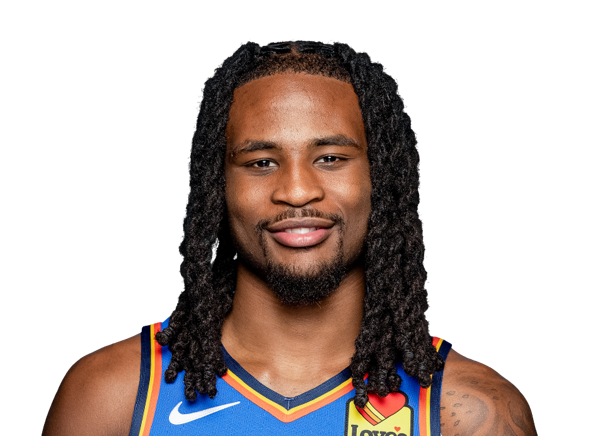

BASKETBALLKEEP
Dynasty · Redraft · Hardwood

PG · OKC
Cason Wallace
Keep #256
Board #273
Age 23
668 BK Value
Plus
- Elite steals. This is a 2-steal floor most weeks.
- Helps free-throw %. The line is not a leak.
- Helps in threes. Enough makes to keep the column green.
Minus
- Turnovers run high. Pair him with safe handles.
Boards
Where the boards put him
High 130 · low 240.
| Board | Rank |
|---|---|
| FantasyPros Dynasty ECR | 130 |
| Hashtag Basketball Dynasty | 240 |
| KeepTradeCut NBA | 240 |
On the wire
What channel is Thunder vs Spurs on TV tonight? Game 7 time, NBA schedule, injury report
What channel is Thunder vs Spurs on TV tonight?
Jalen Williams Cason Wallace Chet Holmgren Jalen Suggs Jaylin Williams
What Jalen Williams' injury means for the Thunder and why trading for a replacement isn't so simple
Jalen Williams' Offensive Revival a Work in Progress Following Wrist Injury for OKC Thunder Sports Illustrated
Jalen Williams Cason Wallace Chet Holmgren Shai Gilgeous-Alexander
Jalen Williams suffers gruesome leg injury, stretchered off court in Thunder's victory over Clippers
Thunder’s Jalen Williams to miss Game 7 vs.
Jalen Williams Chet Holmgren Cason Wallace Luka Doncic Jaylin Williams
All players · The Keep · The Board · BK News · Calculator